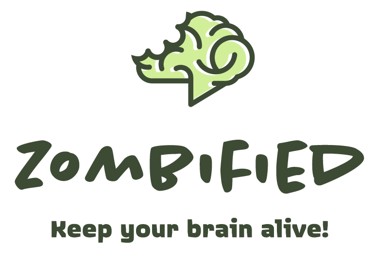

The Hive Brazil design test, april 2018
What is?
A competitive party game with intuitive tasks that stimulate exercises for the brain.
Why neurobics?
- The brain needs exercises to stay active;
- Getting out of the rut and avoiding everything in automatic helps to boost memory and concentration;
- Party games are a great way to keep people in activity together.